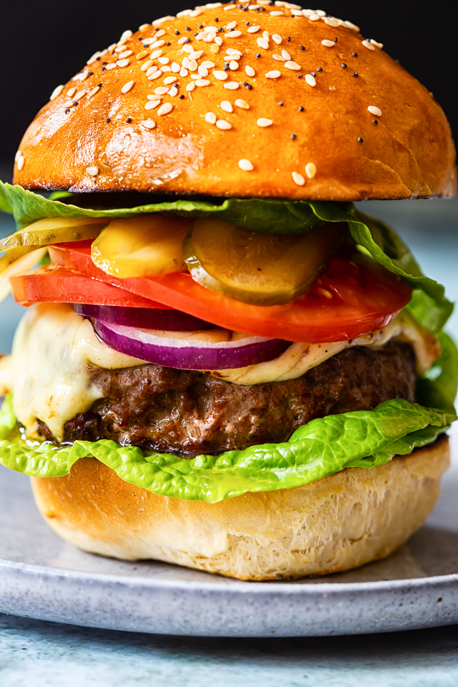

Cheeseburger

Description
A cheeseburger is a classic sandwich made of a juicy beef patty topped with melted cheese, nestled between a soft bun, and often adorned with lettuce, tomato, pickles, onions, and condiments for a deliciously satisfying meal.
Ingredients
- Ground beef (80/20 blend for best flavor)
- Cheese (cheddar, American, or your choice)
- Burger buns (soft, toasted)
- Lettuce (leaf or shredded)
- Tomato (sliced)
- Pickles (slices)
- Onion (raw, grilled, or caramelized)
- Ketchup
- Mustard
- Salt and pepper (for seasoning)
Steps
- Form Patties: Shape ground beef into patties and season with salt and pepper.
- Cook Patties: Grill or pan-fry the patties for 3-4 minutes per side, adding cheese during the last minute.
- Toast Buns: Toast the burger buns until golden.
- Assemble: Place the patty on the bottom bun and add lettuce, tomato, pickles, and onion.
- Top and Serve: Add ketchup and mustard on the top bun, then close the burger and serve.